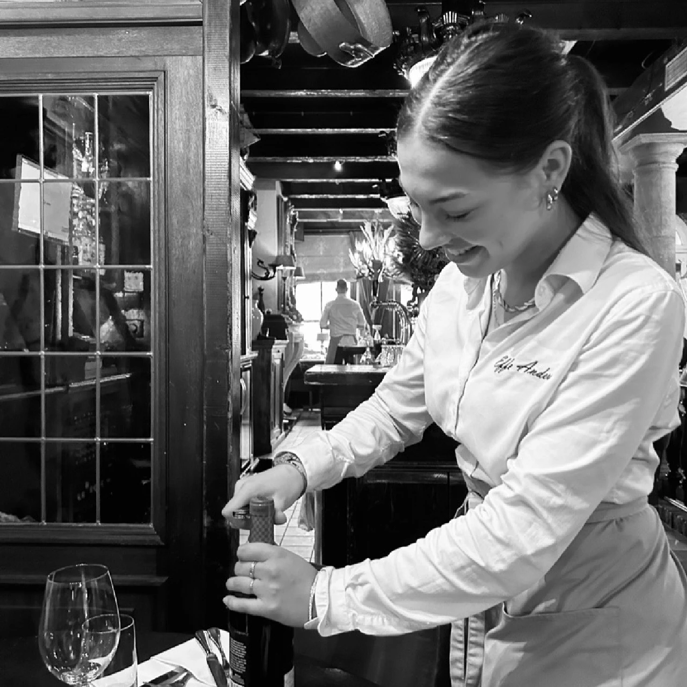
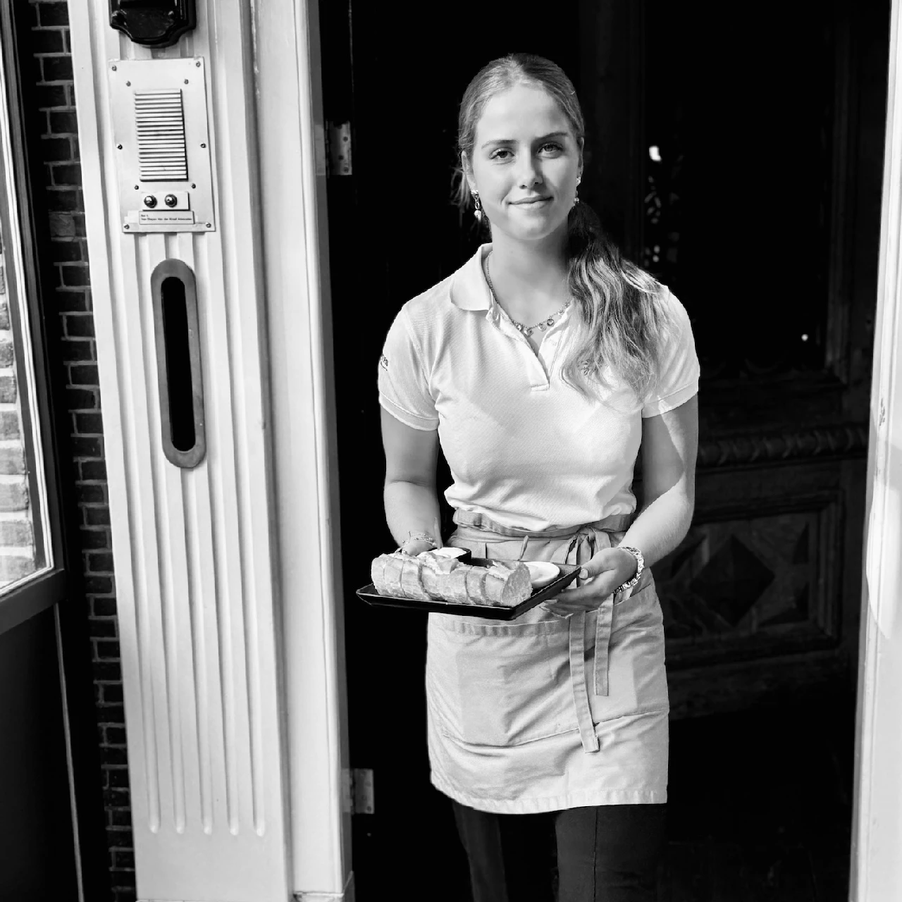
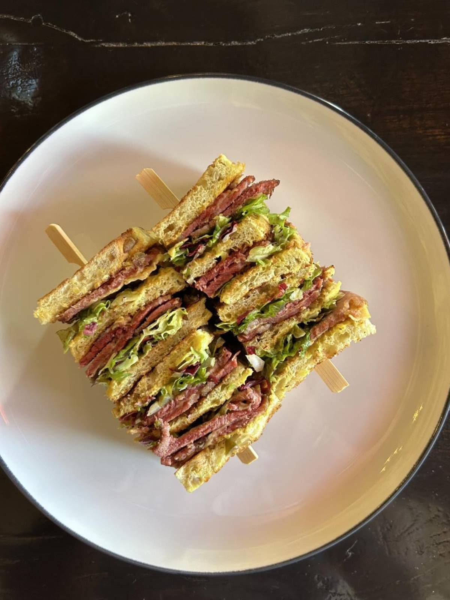
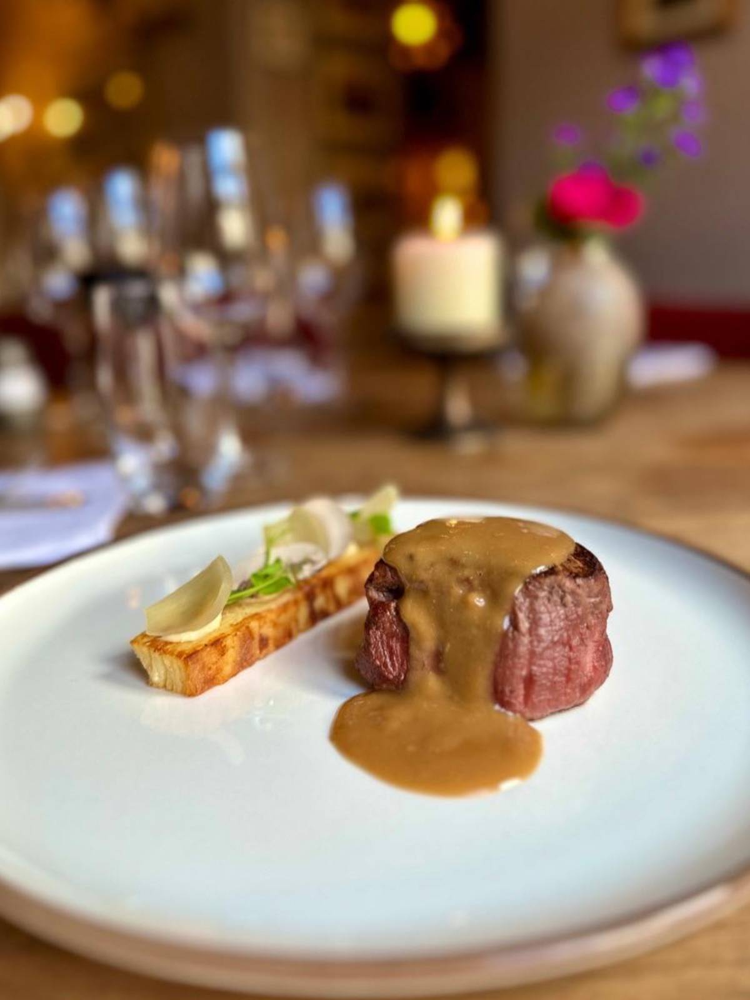
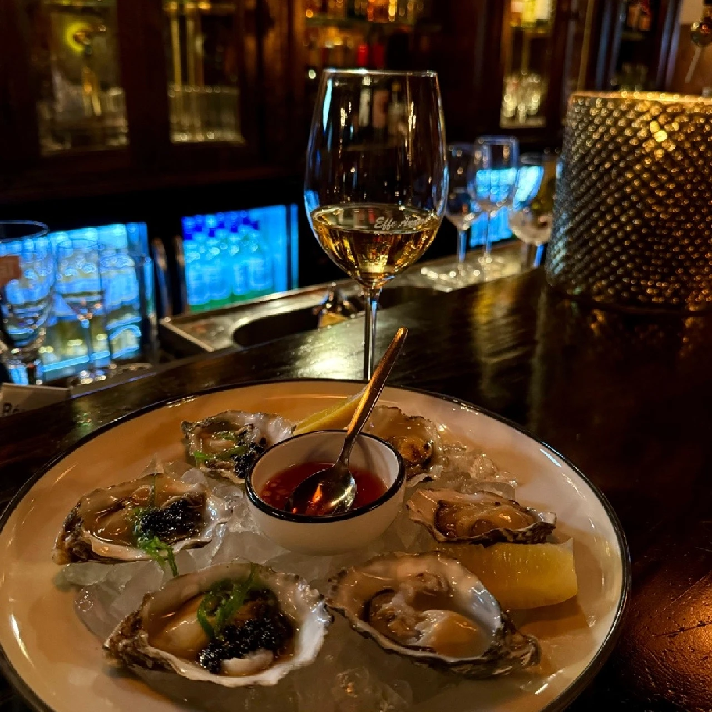
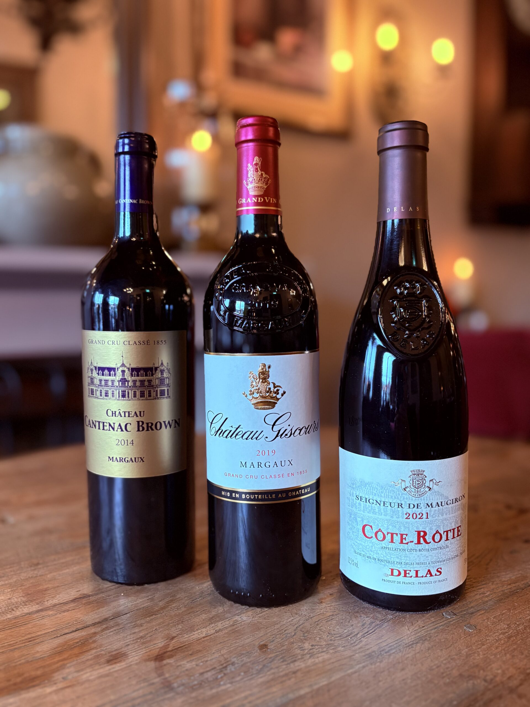
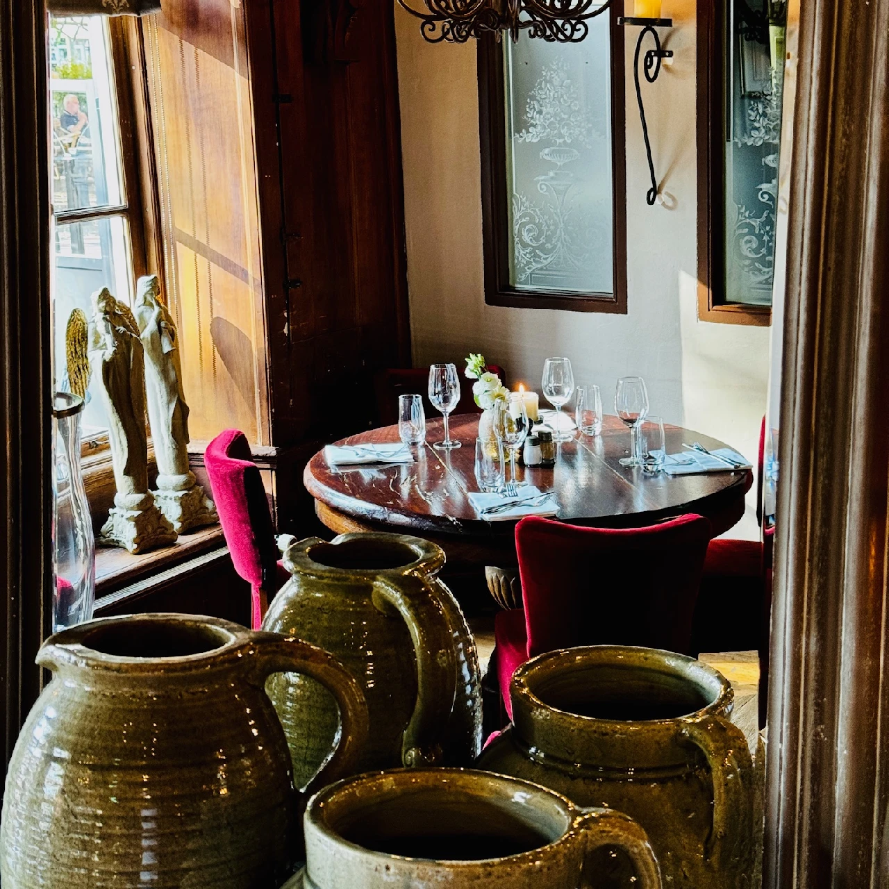
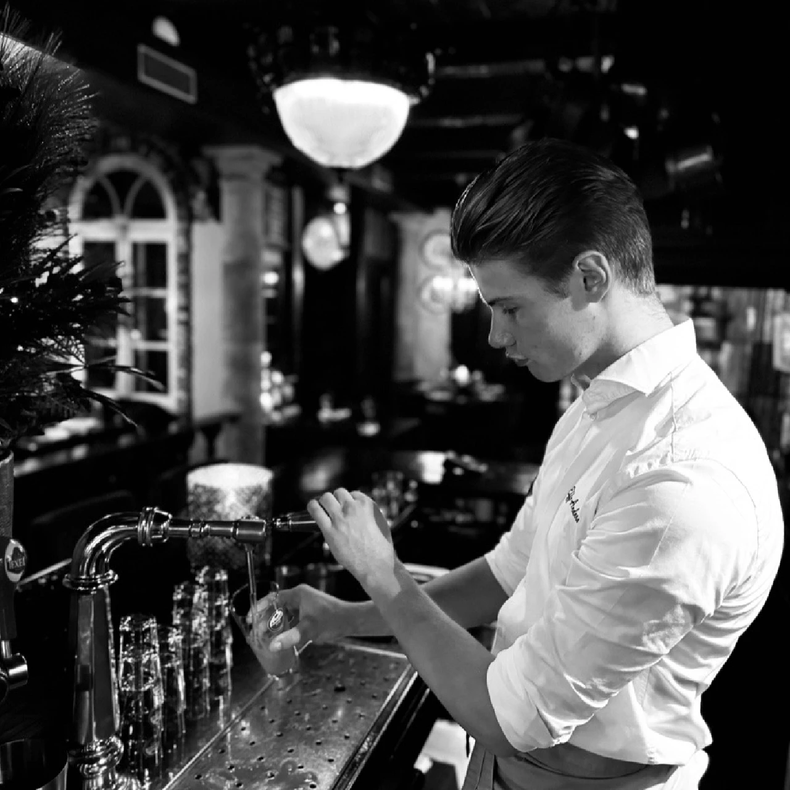

Aan de Koemarkt in Purmerend
EterijEffe Anders
Een restaurant waar het goede leven centraal staat.
Woensdag vanaf 17:00Donderdag t/m zondag vanaf 12:00
Het adres waar je blijft hangen
Welkom bij Effe Anders, gelegen aan het mooie horecaplein in Purmerend. Het adres waar je blijft hangen voor eten, drinken en gezelligheid.
We hopen met onze hoge standaard iedereen te verrassen. De sfeer is gemoedelijk, gezellig en een tikkeltje klassiek. We staan voor gerechten van hoge kwaliteit en goede service zonder poespas.
Het draait bij ons om de perfecte balans van gezelligheid, kwaliteit en zorgzaamheid.


Onze kaarten
Lunch, diner, smaakmakers en nagerechten, met de prijzen erbij.

Vanaf twaalf uur, donderdag tot en met zondag.
Beemster bruin of baguette
- Kalfskroketten€ 10,75
Mosterdmayonaise
- Warme beenham€ 12,50
Gesmolten Beemster kaas / honing-mosterdsaus
- Carpaccio€ 14,50
Groene kruidendressing / Parmezaanse kaas
- Tonijnsalade€ 13,50
Kwartelei / rode ui / kappertjes
- Egg's Benedict€ 16,50
Gerookte zalm / getoaste brioche
- Egg's Benedict€ 14,50
Beenham / getoaste brioche
- Egg's Benedict€ 13,50
Avocado / getoaste brioche
- Club sandwich€ 15,00
Maisbrood / gegrilde kip / ei / tomaat / spek / vadouvan-mayonaise
- Luxe hapjesplateau€ 15,75
Keuze: mosterdsoep of kreeftensoep
- Varkenshaassaté€ 24,50
Frites / zoetzure komkommer
- Eendenleverkrullen€ 8,50
Toast
- Gerookte paling€ 19,50
- Gerookte zalm€ 17,50
Soepen
- Bisque van kreeft€ 15,50
Half geslagen room / scampi
- Mosterdsoep€ 9,00
Gerookte paling / bosui
- Franse uiensoep€ 9,00
Gegratineerd met oude kaas
Salades
- Salade geitenkaas€ 15,00
Gemarineerde tomaat / krokant spek / groene kruidendressing
- Salade vis€ 23,50
Gerookte zalm / gerookte paling / Hollandse garnalen / scampi's
- Caesar salade€ 16,00
Gegrilde kip / kwarteleitjes / croutons / gemarineerde tomaat / caesardressing
Tosti
- Croque madame€ 8,00
Ham / kaas / spiegelei
Extra
- Scampi's€ 13,50
In knoflookolie op Spaanse wijze
- Ibérico boneless ribs€ 12,50
Gelakt met soja / bosui
- Flammkuchen salami Montanaro€ 14,00
Rucola / truffelmayonaise / pecorino romano
- Flammkuchen quattro formaggi€ 14,00
Rucola / salsa verde
- Gyoza kip€ 14,50
Groente / ponzu / jalapeño-mayonaise
- Zoete-aardappelfriet€ 7,00
Truffelmayonaise / Parmezaan
- Loaded fries€ 7,00
Spek / ui / pecorino romano / vadouvan-mayonaise
- Risottobitterballen, 6 stuks€ 8,50
Truffel / bospaddenstoel
- Risottobitterballen, 6 stuks€ 8,50
Mozzarella / tomaat
- Bitterballen, 6 stuks€ 7,50
- Krokante kip, 6 stuks€ 8,50
- Kaasstengels, 6 stuks€ 7,50
- Mix bitter, 12 stuks€ 8,50
Bitterbal / kaasstengel / bamibal / frikandel

De dinerkaart wisselt per seizoen.
Koude voorgerechten
- Zalmtartaar€ 17,50
Avocado / scampi in tempura / sojavinaigrette / wasabimayonaise / krokante sesam
- Steak tartaar€ 16,50
Frites / kwartelei / truffelmayonaise
- Carpaccio van ossenhaas€ 16,00
Groene kruidendressing / rucola / pijnboompitten / Parmezaanse kaas
- Vitello tonnato€ 17,50
Tonijnsalade / krokante kappertjes / kwartelei / honingtomaatje / tonijnmayonaise
- Vistrio€ 20,50
Gerookte zalm / gerookte paling / Hollandse garnalen
- Burratasalade€ 15,00
Tomaat / rucola / pesto / kersenbalsamico
- Samenstelling van kleine voorgerechten€ 22,50
Warme voorgerechten
- Truffelrisotto€ 16,00
Burrata / paddenstoelen / schuim van witte wijn
- Scampi's & kikkerbillen€ 17,50
Gebakken in romige bieslook-knoflooksaus
- Grote gamba's aioli, 5 stuks€ 18,00
Knoflookolie / bosui
- Gebakken coquilles€ 17,50
Romige fregola / bundelzwam / krokante ibérico / Parmezaanse-kaasschuim
Soepen
- Mosterdsoep€ 9,00
Gerookte paling / bosui
- Franse uiensoep€ 9,00
Gegratineerd met oude kaas
- Bisque van kreeft€ 15,50
Half geslagen room / scampi
Visgerechten
- Tussenmaatse zeetongetjes€ 31,50
Bimi / pommes Anna / béarnaisesaus
- Kabeljauwfilet€ 29,50
Romige risotto / ibéricoham / bospaddenstoel / schuim van witte wijn
- Gebakken zeewolf€ 29,50
Linguine / romig schuim van gele curry
- Ravioli gevuld met eekhoorntjesbrood€ 24,50
Groene asperge / salieboter / schuim van Parmezaanse kaas
Vleesgerechten
- Argentijnse ossenhaas
Aardappelrösti / gepofte ui / eigen jus
150 gr. “Lady steak”€ 29,50200 gr.€ 35,50 - Kalfsentrecote€ 32,50
Romige knoflookjus / bospeen / ui / shiitake / nieuwe aardappel
- Lamskoteletten€ 36,50
Groene asperges / aardappelcrème / tijmjus
- Franse eendenborst op oosterse wijze€ 26,50
- Varkenshaassaté€ 24,50
Nasi / zoetzure komkommer / kroepoek
Bijgerechten
- Uien en gebakken champignons€ 4,50
- Little gem salade€ 4,50
- Gegratineerde witlof€ 4,50
- Stokbrood, aioli en gezouten roomboter€ 7,00
- Eendenleverkrullen€ 8,50

Voor erbij, vooraf of aan de bar.
- Irish móre oesters, per stuk€ 5,00
Rodewijnazijn / sjalot / citroen
- Irish móre oesters, per stuk€ 5,00
Sojakaviaar / wakame
- Irish móre oesters, per stuk€ 6,00
Gerookte paling / wittewijnschuim
- Kreeftenbrioche, 2 stuks€ 15,50
Vanille / citrus / kreeftenmayonaise
- Gerookte-palingbrioche, 2 stuks€ 14,50
Granny Smith / bieslookmayonaise
- Steak-tartaarbrioche, 2 stuks€ 12,50
Pecorino romano / truffelmayonaise
- Jamón ibérico, 90 gram€ 17,00
Met olijven
Voor diverse dessertwijnen en port: vraag het een van onze medewerkers.
- Cheesecake€ 10,00
Met mango-ijs, framboos en gelkoek-crumble
- Chocoladedessert€ 12,50
Met witte bros, crème suisse, chocolademousse, krokante brownie en frambozensorbetijs
- Sticky toffee€ 10,00
Met karamelsaus, vanilleroomijs en slagroom
- Wentelteefjes€ 10,00
Met crème fraîche, vanilleroomijs en slagroom
- Crème brûlée van de maand€ 10,00
- IJstruffel, per stuk€ 3,00
- 4 diverse kaassoorten€ 14,50
Met vijgencake en truffelhoning
- Sgroppino€ 10,00
- Espresso martini€ 10,50

Gek op mooie wijnen
Bij Effe Anders houden we van het goede leven. Niet alleen goed eten is belangrijk: we zijn gek op mooie wijnen. Daarom hebben we een zeer uitgebreide wijnkaart en schenken we diverse mooie wijnen per glas.
Voor diverse dessertwijnen en port: vraag het een van onze medewerkers.
Proef de sfeer


Kom langs
Koemarkt 5-7
1441 DA Purmerend
+31 299 404 696
info@eterijeffeanders.nl
Openingstijden
| Maandag | gesloten |
|---|---|
| Dinsdag | gesloten |
| Woensdag | 17:00 – 22:00 |
| Donderdag | 12:00 – 22:00 |
| Vrijdag | 12:00 – 22:00 |
| Zaterdag | 12:00 – 22:00 |
| Zondag | 12:00 – 22:00 |